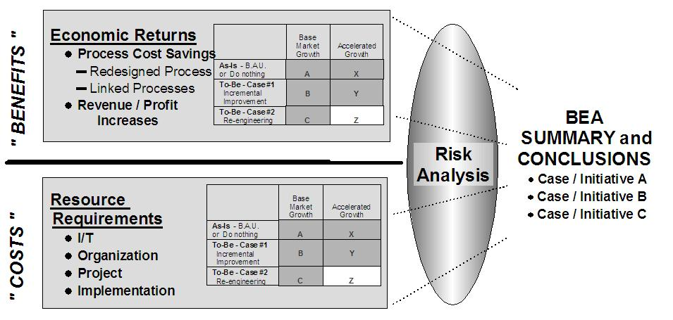
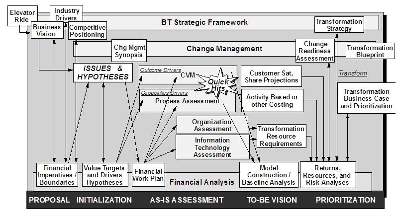

| Guideline: Developing Business Case |
 |
|
| Related Elements |
|---|
The two diagrams below document the thought process involved in building the Business Case:

 Valuation Techniques: DCF, NPV, IRR -- Every CFO, will expect you to present cash flow estimates associated with each recommendation for the life of the recommended assets and to calculate the net present value (NPV) resulting from those cash flows. Most clients will have adopted a corporate discount rate to be used to discount the cash flow (DCF) so as to arrive at NPV valuation; simply ask a senior financial executive for the “discount rate” number. (Typically, corporations use an inappropriately high discount rate. However, given the high uncertainty in most business transformation cash flow projections, whatever rate the client has adopted for other purposes should be accepted by the team.) While NPV is the generally accepted tool for project valuation, you should also plan on calculating both IRR and "pay-back period"; for many projects these are equally valid and typically simpler to present and visualize. Activity-Based Costing – ABC is a powerful tool for truly understanding the economics behind your recommendations. Please refer to Activity-Based Costing (ABC) for a step-by-step approach to developing, interpreting and presenting ABC Analysis. For a more in-depth discussion, please refer to the books listed in the references segment. Scenarios & Sensitivity Analysis -- Typical business cases need to consider operating scenarios and sensitivity analyses. These primarily involve answers to relatively simple questions such as “If we implement the recommendation, how does this compare to “as is” if demand surges 15% or declines 15% or if we are forced to lower prices 20%?” As shown in Activity-Based Costing, the understanding of activity and cost drivers provided by Activity-Based Costing work make sensitivity analysis very straightforward. Risk Assessment -- There are many approaches to assessing and quantifying risks. Clients frequently have their own preferred approach; you will want to inquire about this early in the engagement. IBM has never adopted a default approach for consulting. Please refer to the example, cited above, for one method that is both useful and straightforward. Real Options -- In an increasingly complex and uncertain world conventional valuation techniques discussed above do not adequately reflect the sophisticated decisions many businesses have to make when reengineering or restructuring their IT infrastructure. It is frequently useful to structure these business decisions as real options and apply the cutting-edge tools of financial options theory to their assessment. The mechanics of real options analysis is thoroughly explained in Real Options: Managing Strategic Investment in an Uncertain World by Martha Amram and Nalin Kalatilaka (See references, below.) They list 6 types of decision situations in which options theory is appropriate, and in which conventional NPV analysis can give misleading results: 1) wait-to-invest options, 2) growth options, 3) flexibility options, 4) exit options, and 5) learning options. In certain capital-intensive industries, operating under great uncertainty, like mining and petroleum, real options are already frequently used. In other industries, clients will seldom demand that you be familiar with this technique. Development of the Business Case is the responsibility of the Project Team, with the assistance of client financial personnel. The development of the financial calculations is the responsibility of the Project Team with the guidance and oversight of client financial personnel. |
| Supporting Materials |
|---|
| © Copyright IBM Corp. 1987, 2012 All Rights Reserved Property of IBM These materials are intended only for use as part of an IBM engagement |